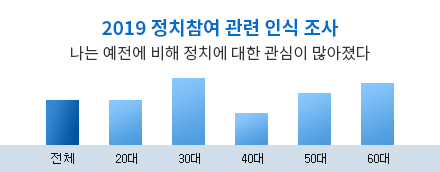

Content Politica, 콘텐츠가 정치를 담는 방법
코로나 19 확산이라는 비상 상황을 맞이한 가운데, 제 21대 국회의원 선거가 눈 앞으로 다가왔다. 이번 총선은 2019년 12월 개정된 선거법이 처음 적용되는 선거로 정치계에 큰 지각 변동을 몰고 올 것으로 예상된다. 사상 처음으로 준연동형(50%) 비례대표제가 도입되고, 선거 연령이 만 19세에서 18세로 하향되어 53만 2천 여명의 청소년이 새롭게 투표권을 얻게 되었다. 이로 인해 코로나 19 사태와 함께, 기존과 달라진 선거 제도가 이번 총선에 어떤 영향을 미칠지 여론의 관심이 쏠리고 있다.
시장조사기관 엠브레인에서 만 19세-59세 성인 10,000명을 대상으로 실시한 ‘정치 참여 인식 조사(2019.11)’ 결과, 전체 10명 중 6명(58.5%)이 예전에 비해 정치에 대한관심이 증가했다고 응답했으며, 모든 연령에서 정치 관심도가 증가한 것으로 나타났다. 특히, 정치에 관심이 많은 것으로 알려져 왔던 40대- 50대보다 20-30대의 관심도가 더 많이 증가한 것이 주목할 만 하다.
시장조사기관 엠브레인에서 만 19세-59세 성인 10,000명을 대상으로 실시한 ‘정치 참여 인식 조사(2019.11)’ 결과, 전체 10명 중 6명(58.5%)이 예전에 비해 정치에 대한관심이 증가했다고 응답했으며, 모든 연령에서 정치 관심도가 증가한 것으로 나타났다. 특히, 정치에 관심이 많은 것으로 알려져 왔던 40대- 50대보다 20-30대의 관심도가 더 많이 증가한 것이 주목할 만 하다.
